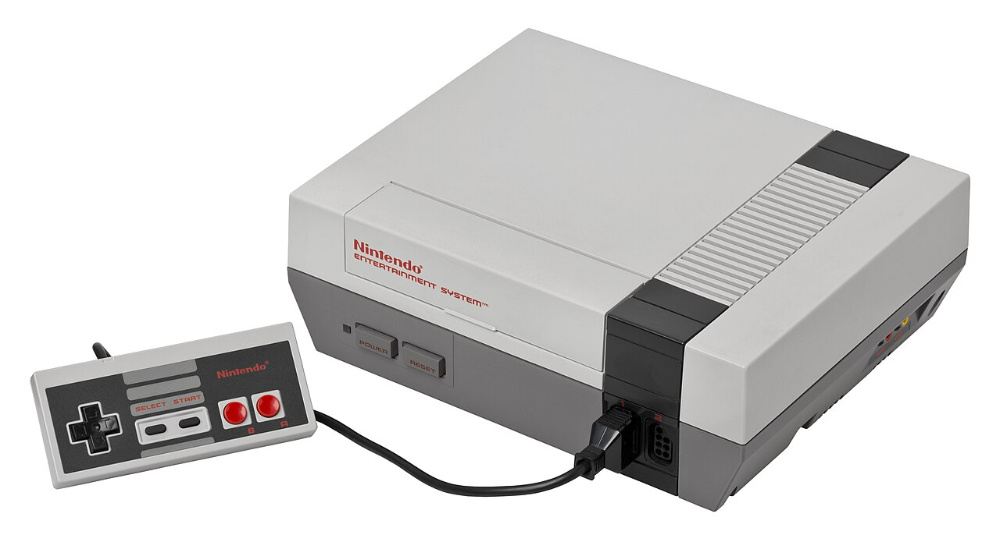
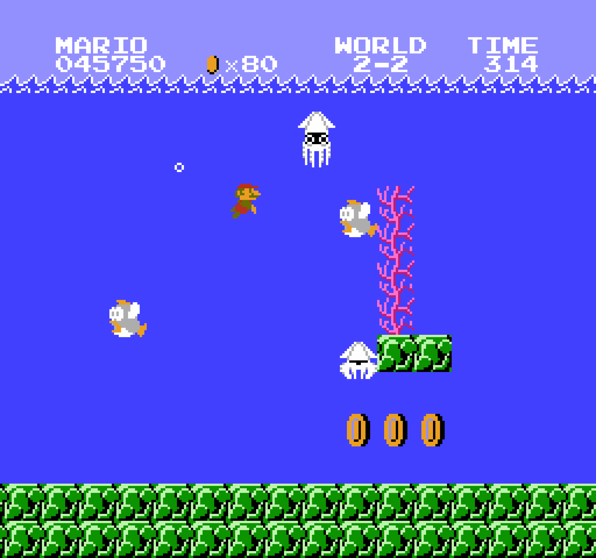
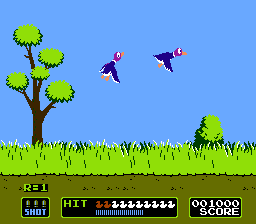
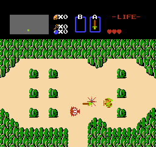
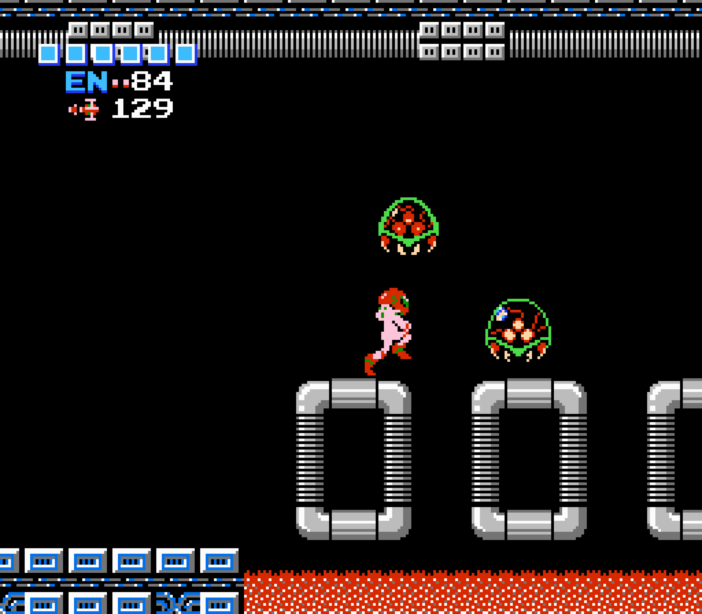
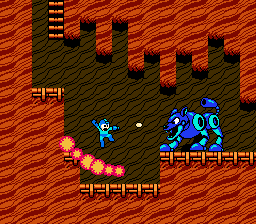
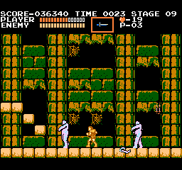

Year Released
NES: The 8-Bit
Machine That
Changed Gaming
Forever
Launched in 1985, the Nintendo Entertainment System brought arcade experiences home and saved an industry. This is the story of the console that started it all.

Quick Facts
CPU Architecture
Units Sold Worldwide*
Licensed Games Released
A Gaming Revival
A Short History
By the early '80s, the video game market had crashed. Nintendo entered the scene with a bold vision, the Family Computer in Japan, later reimagined as the Nintendo Entertainment System (NES) for the West. With tighter quality control, memorable games, and a focus on fun, the NES rebuilt trust and sparked a new era of gaming.
It wasn't just a console. It was the comeback the industry needed.
Timeline
Famicom released in Japan
NES launches in North America
NES reaches more international markets
NES becomes a global success
A library of classics that still inspire
Hardware
The NES is iconic for its clean design, rugged build, and simple setup.
- Custom 8-bit CPU by Ricoh
- 2 KB internal RAM
- 256x240 resolution
- 52-color palette with limited on-screen colors
- Front-loading cartridge slot
- Two controller ports
Iconic Game Library

Super Mario Bros.
1985

Duck Hunt
1984

The Legend of Zelda
1986

Metroid
1986

Mega Man 2
1988

Castlevania
1986
Gameplay screenshots sourced from credited LaunchBox Games Database image pages.
Why It Matters
The NES redefined what home consoles could be. It set the standard for quality, created unforgettable franchises, and inspired generations of gamers and developers.
It didn't just change gaming.It changed culture.
Fun Facts
- The NES was called the Famicom in Japan.
- The U.S. NES design looked different from the Japanese Famicom.
- Super Mario Bros. became the best-selling NES game.
- The NES can still be found in working condition today.
- Many NES games were designed to be played again and again.
The Legacy Lives On
From living rooms to speedruns, the NES continues to inspire. Whether you grew up with it or are discovering it now, the 8-bit magic is timeless.